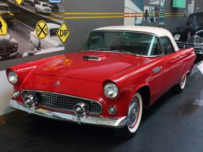
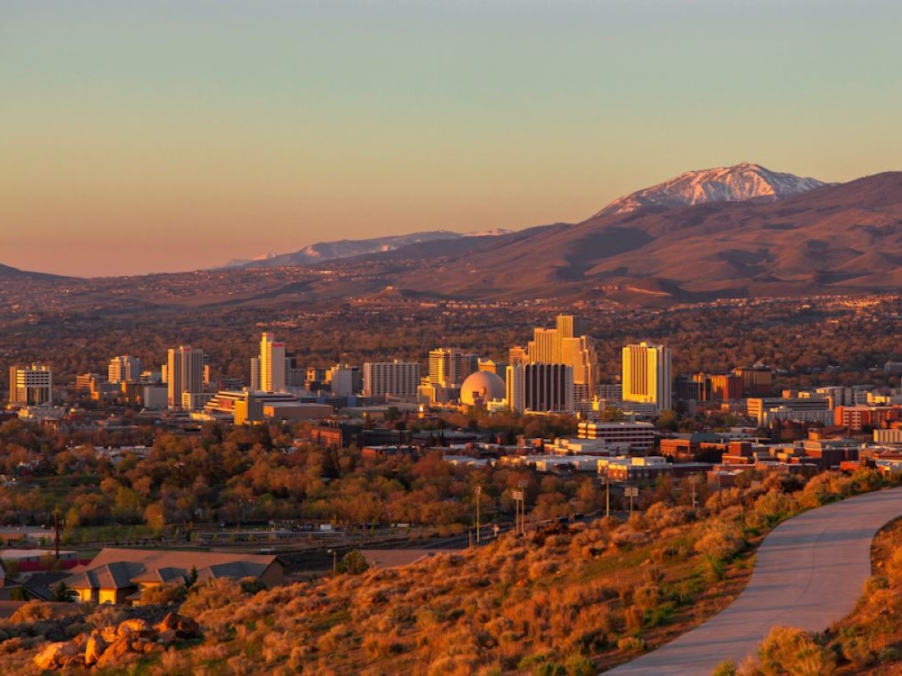
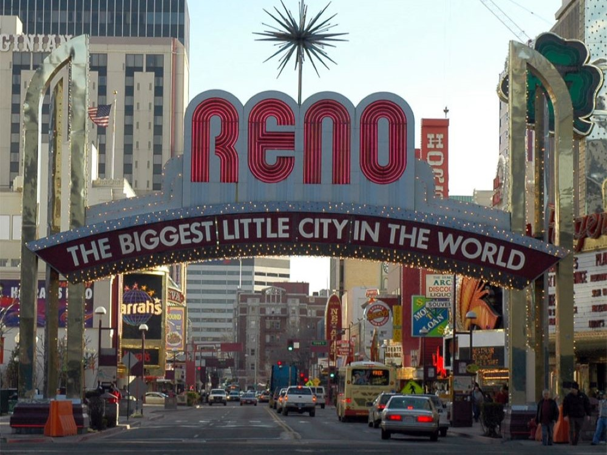
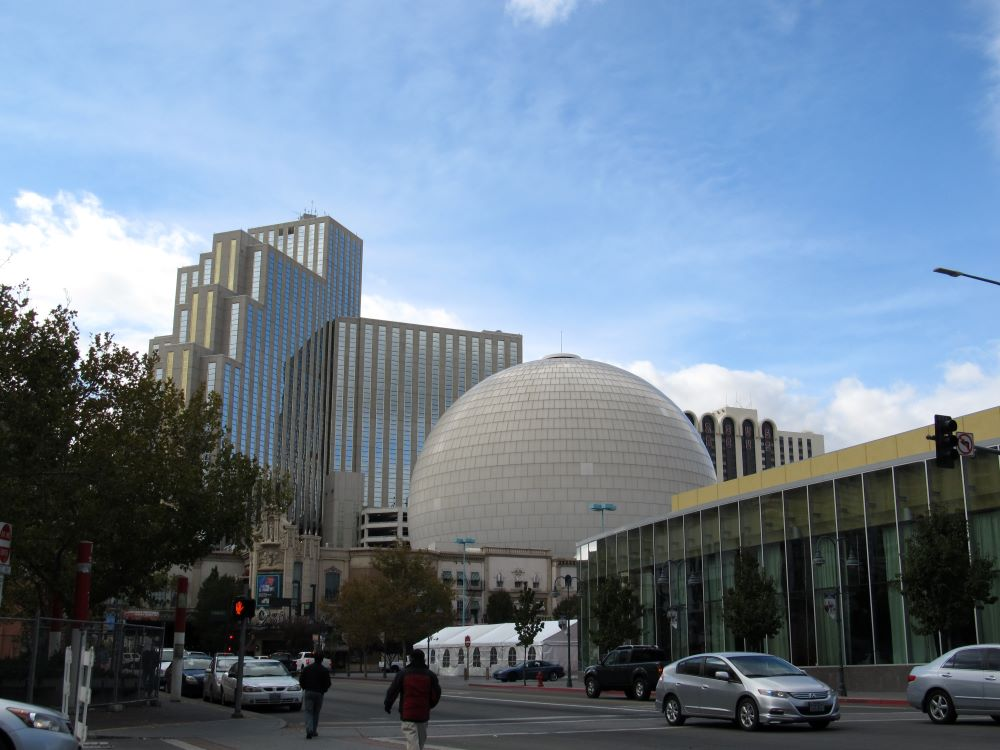

.jpg){kind=link}
Reno Travel Guide
CVibrant urban destination known for lively casinos, a thriving arts scene, and easy access to outdoor recreation set against scenic mountain landscapes.
Places to See in Reno

Matthew T Rader, https://matthewtrader.com, CC BY-SA 4.0, via Wikimedia Commons

Bartley Ranch Regional Park
Scenic regional park featuring historic buildings, equestrian facilities, multi-use trails, and an outdoor amphitheater for seasonal performances.

Visitor7, CC BY-SA 3.0, via Wikimedia Commons; Image Size Adjusted

Bicentennial Park
Riverside green space featuring walking and biking paths, public art installations, and shaded seating areas ideal for relaxation and scenic views.

Huffaker Park
Urban green space offering scenic desert trails, sports fields, picnic shelters, and panoramic views of the surrounding mountains.

Andromeda2064, CC BY-SA 4.0, via Wikimedia Commons; Image Size Adjusted

National Automobile Museum
Extensive automobile museum featuring over 225 vintage and classic cars displayed in immersive historic street scenes with interactive exhibits.

Robert Arends, CC BY-SA 4.0, via Wikimedia Commons; Image Size Adjusted

Nevada Museum of Art
Contemporary art museum featuring rotating exhibitions, educational programs, and a nationally recognized center for art and environment research.

Bernard Gagnon, CC BY-SA 3.0, via Wikimedia Commons; Image Size Adjusted

Wilbur D. May Center
Museum complex featuring world cultures exhibits, rare artifacts, rotating galleries, botanical gardens, and collections assembled by rancher, philanthropist, and world traveler Wilbur D. May.
Overview
Reno is the "Biggest Little City in the World," a city of about 265,000 on the Truckee River in the high desert of northwestern Nevada, at about 4,500 feet, with the Sierra Nevada rising directly to the west. It is famous for its casino resorts, the Reno Arch that spans Virginia Street, and its history as a divorce and gambling capital, and it has grown into a diverse city with a lively arts scene and a strong outdoor identity.
Visitors come for the casinos and nightlife downtown, for festivals such as Hot August Nights, the Reno Rodeo, and the Great Reno Balloon Race, and as a gateway to Lake Tahoe, which is about 30 miles away, and to the ski resorts of the Sierra. The Truckee River Whitewater Park and the Riverwalk District, the museums, and the craft breweries and restaurants of Midtown give Reno a much broader appeal than its gambling image suggests.
The Reno area was a stop on the California Trail before the Central Pacific Railroad founded the town in 1868, naming it for Union General Jesse Reno. It grew as a rail and supply center for the Comstock mines, and the University of Nevada moved here in 1885. In the early 20th century, Reno became known as the "Divorce Capital of the World" because of its short residency rules, and in 1931 Nevada legalized widespread gambling, which became the city’s main industry for decades. In recent years, technology and logistics companies have diversified the economy.
The Reno Arch, first erected in 1926 and rebuilt several times, marks the heart of downtown, and the Truckee River flows through the center of the city with the Riverwalk lined with shops and restaurants. The Reno–Tahoe area is also close to Virginia City and the Comstock country. Burning Man, the annual gathering in the Black Rock Desert, uses Reno as its main gateway city.
The National Automobile Museum displays the collection of casino founder William Harrah, with more than 200 vehicles. The Nevada Museum of Art, in a striking black building opened in 2003, focuses on art of the Great Basin and the American landscape, and the Wilbur D. May Center includes a museum of art and artifacts collected by an adventurer and heir. The Terry Lee Wells Nevada Discovery Museum, the Nevada Historical Society, and the Fleischmann Planetarium round out the museums.
Reno has a large park system on its river and foothills. Idlewild Park and Wingfield Park, the center of the Truckee River Whitewater Park, are central, Bartley Ranch Regional Park and Huffaker Park offer trails and lakes, and Bicentennial Park is a quiet neighborhood green space. Hunter Creek Trail and Galena Creek Recreation Area climb into the Sierra foothills just minutes from town.
The Reno Aces, the Triple-A affiliate of the Arizona Diamondbacks, play at Greater Nevada Field downtown, and the Reno Bighorns compete in the NBA G League. The University of Nevada Wolf Pack are the city’s major college team, with football and basketball games drawing large local crowds.
Reno has a high desert climate with about 300 days of sunshine a year and low rainfall. Summers are hot and dry, with highs in the 90s °F and cool nights, winters are cold, with highs in the 40s °F and occasional snow that usually melts quickly, and spring and fall are mild. The Sierra Nevada, close by, receives heavy snow that supports skiing from November through April.
Things to Do
Discover the Biggest Little City in the World
Reno is northern Nevada's largest city and is known for its vibrant entertainment scene, outdoor recreation, arts and culture, and convenient access to the Sierra Nevada. Located along the Truckee River and just a short drive from Lake Tahoe, Reno offers a unique blend of urban attractions and mountain adventure.
Explore the Riverwalk District
The Riverwalk District is one of Reno's most popular destinations, featuring restaurants, breweries, boutiques, galleries, parks, and public art along the Truckee River. Visitors can enjoy walking paths, outdoor dining, community events, and scenic river views in the heart of downtown.
Visit the National Automobile Museum
Widely regarded as one of the finest automobile museums in the country, the National Automobile Museum showcases more than 200 vintage and classic vehicles. The collection includes historically significant automobiles, celebrity-owned cars, and interactive exhibits highlighting the evolution of transportation.
Experience Reno's Arts and Culture Scene
Reno is home to numerous cultural attractions, including the Nevada Museum of Art, public art installations, theaters, music venues, and annual festivals. The city has become a regional hub for arts, creativity, and entertainment throughout the western United States.
Enjoy Outdoor Recreation on the Truckee River
The Truckee River runs through downtown Reno and provides opportunities for kayaking, paddleboarding, fishing, walking, and biking. The Truckee River Whitewater Park attracts paddlers from around the region and serves as a centerpiece of downtown recreation.
Take a Day Trip to Lake Tahoe
Reno's location makes it an excellent base for exploring Lake Tahoe, one of the most beautiful alpine lakes in North America. Visitors can enjoy boating, hiking, beaches, skiing, scenic drives, and outdoor adventures just a short drive from the city.
Top Trails
Hunter Creek Trail
Length: Approximately 6 miles round trip
Elevation Gain: Approximately 1,200 feet
Difficulty: Moderate
One of Reno's most popular hikes, Hunter Creek Trail follows a scenic canyon to a beautiful waterfall. The route offers mountain views, creek crossings, wildflowers, and excellent opportunities for wildlife viewing.
Galena Creek Nature Trail
Length: Approximately 2 miles loop
Elevation Gain: Minimal
Difficulty: Easy
Located in the Galena Creek Recreation Area, this family-friendly trail winds through pine forests and meadows while providing educational opportunities about the region's natural environment and wildlife.
Thomas Creek Trail
Length: Approximately 4 to 10 miles round trip
Elevation Gain: Moderate to Strenuous
Difficulty: Moderate
This scenic trail climbs into the Carson Range and provides spectacular views of Reno, Washoe Valley, and the Sierra Nevada. The route is popular among hikers, trail runners, and mountain bikers.
Truckee River Walk Trail
Length: Approximately 4 miles round trip
Elevation Gain: Minimal
Difficulty: Easy
This paved urban trail follows the Truckee River through downtown Reno and connects parks, public art installations, restaurants, and entertainment districts. It is ideal for walking, jogging, biking, and sightseeing.
Sources: Visit Reno Tahoe visitor information, including details on downtown Reno, the Riverwalk District, Truckee River recreation, arts and culture attractions, outdoor activities, and nearby Lake Tahoe destinations.
https://www.visitrenotahoe.com/https://www.visitrenotahoe.com/
Additional information verified through the National Automobile Museum and Nevada Museum of Art resources covering museum exhibits, collections, cultural attractions, and educational programs throughout Reno.
https://automuseum.org/https://automuseum.org/
https://www.nevadaart.org/https://www.nevadaart.org/
Further trail and recreation information reviewed through Washoe County and U.S. Forest Service resources covering Hunter Creek Trail, Galena Creek Recreation Area, Thomas Creek Trail, Truckee River pathways, and outdoor recreation opportunities surrounding Reno.
https://www.fs.usda.gov/htnfhttps://www.fs.usda.gov/htnf
This article uses material from the Wikipedia articles and official tourism pages for the Reno, Reno, Nevada, Reno Arch, Nevada Museum of Art, which are released under the Creative Commons Attribution-Share-Alike License 3.0.

.jpg){kind=link}


